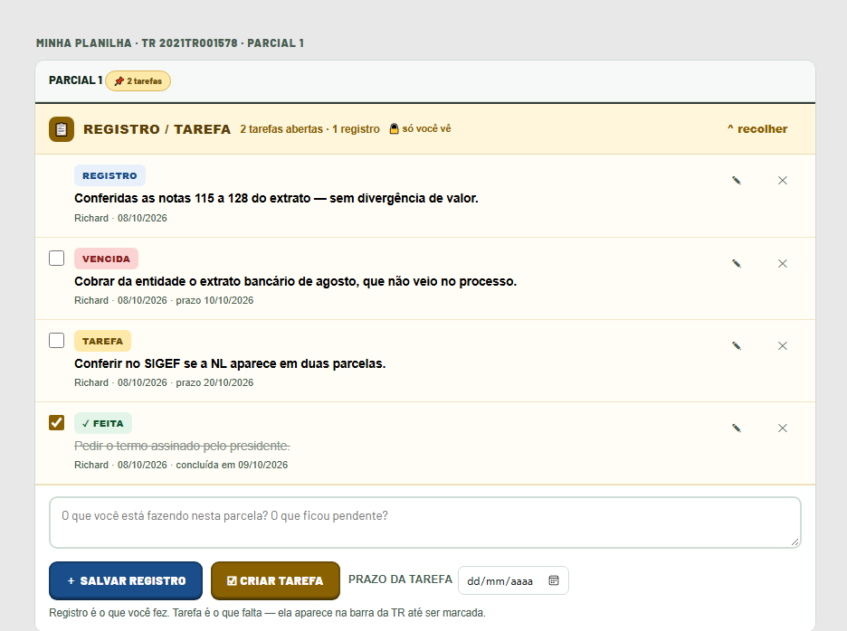
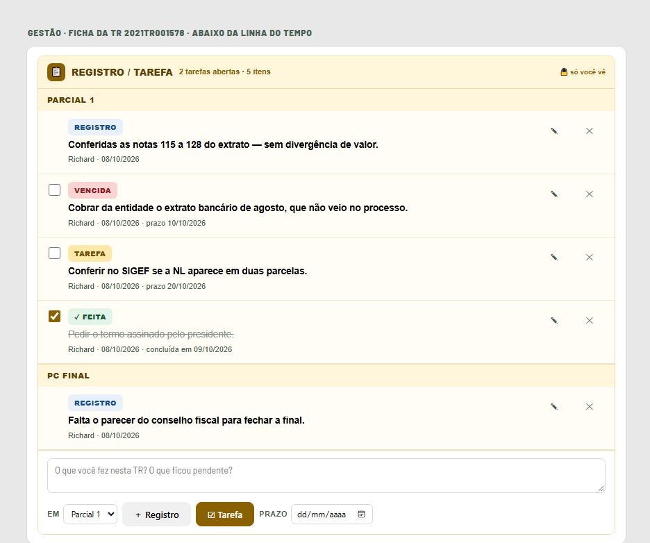
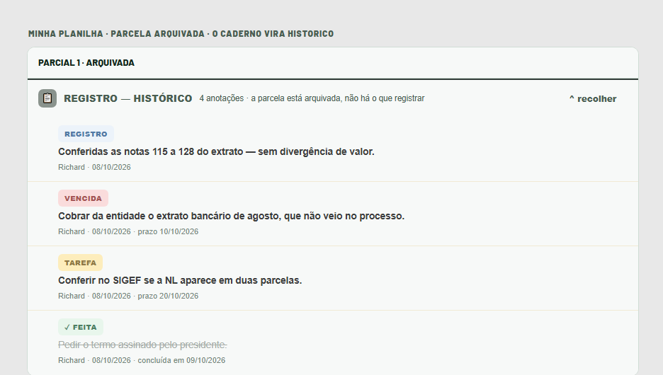

O que você fez e o que falta, anotado dentro da própria análise — e visível só para você.
Para que serve. A análise de uma parcial raramente acaba num dia só. Você confere notas,
descobre que falta um documento, volta dias depois e já não lembra onde parou. O caderno existe
para isso: fica dentro da parcela e guarda duas coisas diferentes.
O que é
Para que serve
Registro
O que você já fez. Fica na parcela como histórico do seu trabalho. Não cobra nada.
Tarefa
O que falta fazer. Pode ter prazo (opcional) e aparece na barra da TR
até você marcar como feita.
É só seu. Ninguém mais vê o que você escreve aqui — nem a coordenação,
nem quem abre a mesma TR. Para o recado que a equipe deve ler existe a caixa Anotações,
que é outra coisa e não mudou.
Na Minha Planilha, abra a TR e depois a
parcial que você está analisando.
2
Dentro do bloco daquela parcela, abaixo das PCs,
está a caixa REGISTRO / TAREFA, em cor de palha, com o cadeado só você vê.
3
Se a parcela ainda não tem nada escrito, a caixa
aparece recolhida, com o botão Escrever. Clique nele.
4
Escreva e clique em Salvar registro
(o que você fez) ou em Criar tarefa (o que falta). Para a tarefa, o campo
prazo da tarefa ao lado é opcional.

A tela: a pílula da TR no alto, um registro, uma tarefa vencida, uma no prazo e uma já feita.
Mínimo de 3 caracteres. O sistema recusa texto mais curto que isso —
anotação de uma letra não ajuda ninguém a lembrar de nada.
2 · A pílula na barra da TR
"Como eu lembro que deixei uma tarefa aberta?"
Enquanto houver tarefa aberta em qualquer parcela da TR, a barra da TR mostra uma
pílula com a contagem. Ela é o lembrete: você vê que há coisa pendente ali sem abrir a TR.
Como aparece
O que significa
Tarefa
Aberta, sem prazo ou com prazo folgado.
Vence hoje
O prazo que você mesmo pôs é hoje.
Vencida
O prazo passou. A pílula pulsa em âmbar.
feita
Concluída. O texto fica riscado e sai da pílula.
O prazo é seu, não é prazo oficial. Ele não tem relação com o prazo de
análise da PC nem com a diligência — serve só para você se cobrar.
3 · Editar, marcar como feita, cancelar
"Escrevi errado. Dá para apagar?"
Marcar como feita — a caixinha à esquerda da tarefa. O texto fica riscado e a
pílula da TR desconta. Desmarcando, ela reabre.
Editar — muda o texto. O item passa a mostrar editado ao lado da data.
Cancelar — o item sai da lista e continua gravado.
Nada é apagado, de propósito. Registro é trilha do seu trabalho: o
cancelado deixa de aparecer na parcela, mas a linha fica no banco. É por isso que o botão diz
"sai da lista, fica no histórico" e não "excluir".
4 · Na aba Gestão, a TR toda de uma vez
"Preciso ver tudo o que anotei nesta TR, não parcela por parcela."
1
Abra a aba Gestão e clique na TR para
abrir a ficha dela.
2
Abaixo da Linha do tempo e das
Anotações está a mesma caixa REGISTRO / TAREFA — agora com tudo o que você
anotou na TR, agrupado por parcela.
3
Para escrever, use o seletor
em [Parcial 1] ao lado dos botões: é ele que diz em qual parcela o item entra.

A tela: os mesmos itens da parcial 1 e o registro da PC final, agrupados — e o seletor em [Parcial 1].
É o mesmo caderno, não um segundo. O que você escreve num lugar aparece
no outro. Marcou a tarefa como feita na Gestão? Na Minha Planilha ela já está riscada.
5 · Parcela arquivada
"A parcial já foi arquivada e a caixa pede tarefa. Por quê?"
Não pede mais. Na parcela arquivada o trabalho acabou, e o caderno se comporta assim:
Não cria nada — nem registro, nem tarefa. O formulário não aparece.
Não conclui, não edita e não cancela — o que está escrito fica como está.
Mas não esconde — se havia anotação ali, a caixa aparece como
Registro — histórico, com o botão ver.
A tarefa que ficou aberta numa parcela arquivada sai da pílula da TR: ela não é
mais pendência.

Na parcela arquivada: sem formulário, sem caixa de marcar e sem os botões — mas nada escondido.
Na ficha da Gestão vale o mesmo: a parcela arquivada não entra no
seletor, e quando todas as parcelas da TR estão arquivadas o formulário não aparece.
SIGPC-GT · Grupo de Trabalho · FCEE — outubro de 2026